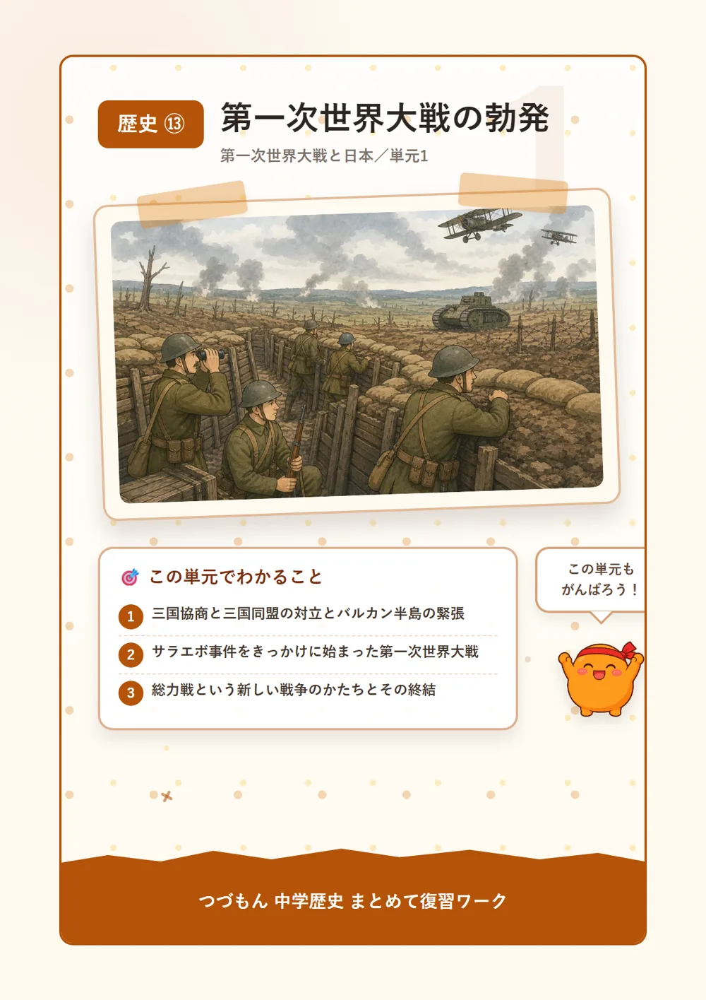
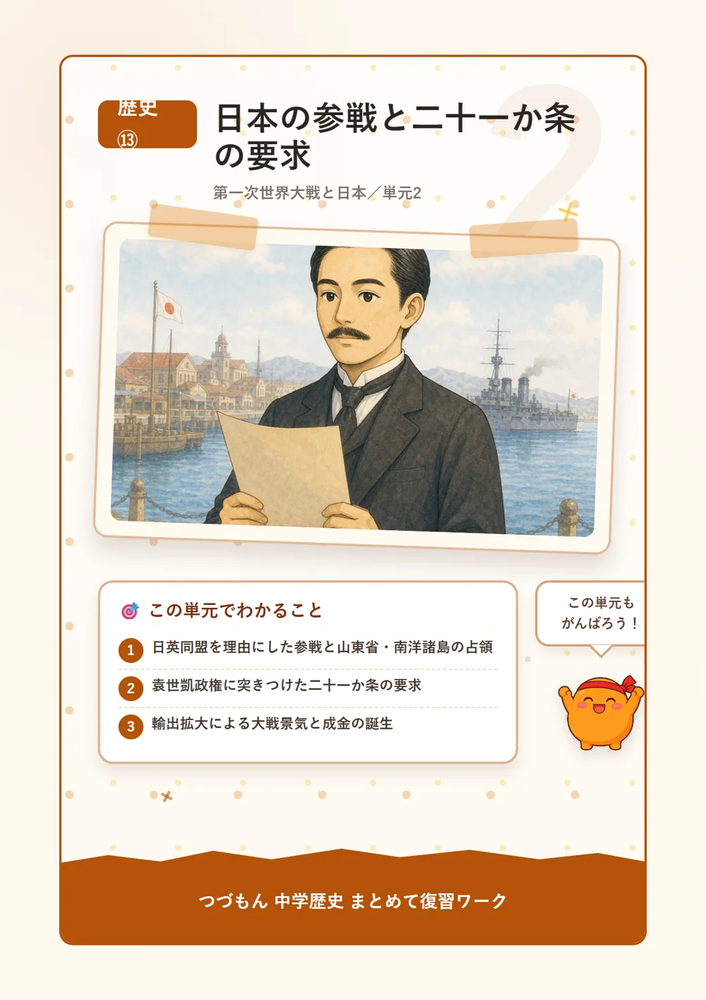
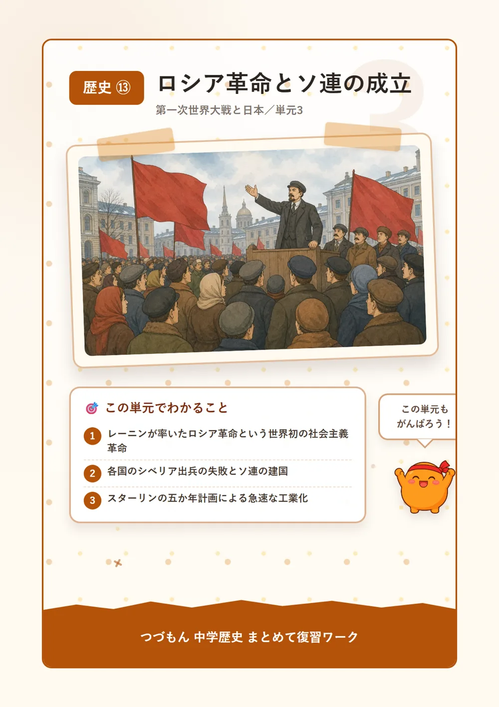
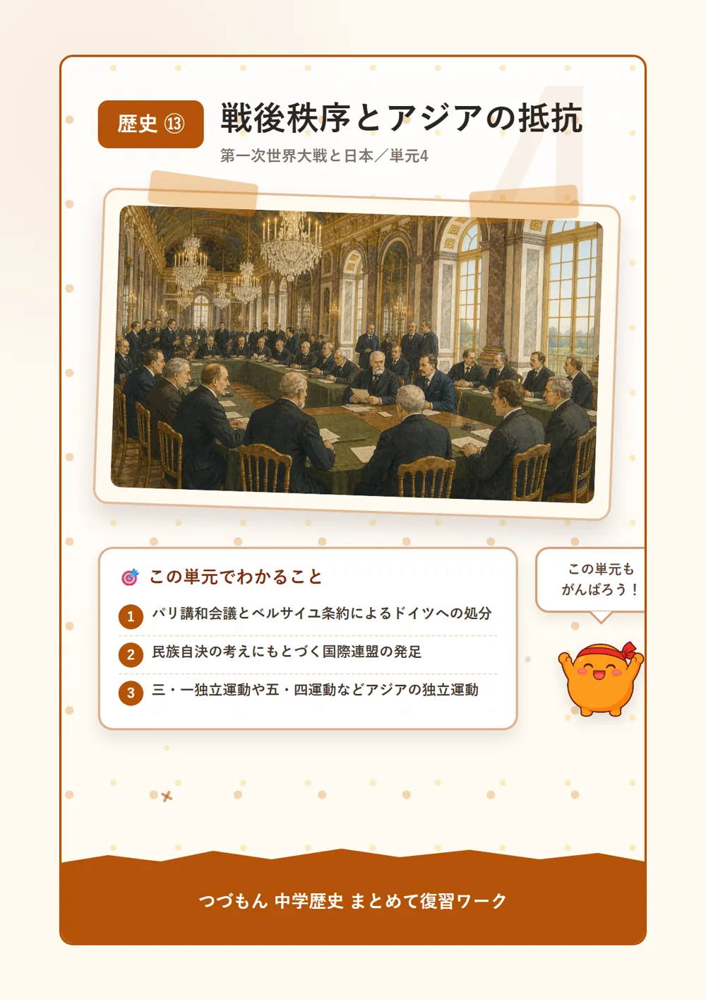

第一次世界大戦と日本

第一次世界大戦の勃発

1ヨーロッパの対立と「火薬庫」
20世紀の初め、ヨーロッパでは大きな国どうしが手を組み合っていたんだ。イギリス・フランス・ロシアが結んだ三国協商と、ドイツ・オーストリア・イタリアが結んだ三国同盟が、にらみ合うような関係になっていたんだよ。とくにバルカン半島は、いろいろな民族や宗教が入り混じっていて対立が絶えず、「ヨーロッパの火薬庫」と呼ばれるほど危険な地域だったんだ。知ってた?小さな火種が、いつ大きな爆発になってもおかしくなかったんだね。
2サラエボ事件から開戦へ
1914年6月、そのバルカン半島のサラエボで、オーストリアの皇太子夫妻がセルビア人の青年に暗殺されるという事件が起きたんだ。これがサラエボ事件だよ。この事件をきっかけに、ドイツを中心とする同盟国と、三国協商にアメリカや日本が加わった連合国が対立し、ついに第一次世界大戦が始まってしまったんだ。ひとつの暗殺事件が、世界中を巻き込む大戦争に発展してしまうなんて、恐ろしいよね。
3総力戦という新しい戦い方
この戦争では、兵士だけでなく国民・経済・科学技術のすべてを戦争のために使う総力戦という新しいスタイルが生まれたんだ。西部戦線では深い溝を掘って身を守る塹壕戦が続き、そこに毒ガスのような恐ろしい新兵器まで使われるようになったんだよ。1917年にアメリカが連合国側で参戦すると戦況は大きく動き、1918年にドイツが降伏して、ようやく戦争は終わったんだ。

日本の参戦と二十一か条の要求

1日英同盟を理由にした参戦
日本は1902年に結んでいた日英同盟を理由に、1914年、第一次世界大戦へ連合国側として参戦したんだよ。そしてドイツが中国で租借していた山東省や、太平洋にあったドイツ領の南洋諸島を、またたく間に占領してしまったんだ。ヨーロッパから遠く離れた日本が、この戦争でこんなに大きく動くなんて、意外に思うかもしれないね。実はここに、日本のアジアへの野心が見え隠れしているんだよ。
2二十一か条の要求
1915年、日本の大隈内閣は中国(中華民国)の袁世凱政権に対して、二十一か条の要求を突きつけたんだ。山東省にあったドイツの権益を日本が引き継ぐことなどを認めさせようとする、かなり強引な内容だったんだよ。袁世凱はやむなくこれを受け入れたけれど、この要求は中国の人々の間に強い反日感情を生む原因になってしまったんだ。
3大戦景気と成金の誕生
戦争でヨーロッパ諸国が輸出どころではなくなると、その隙に日本の製品がどんどん売れるようになり、大戦景気と呼ばれる好景気が訪れたんだ。この波に乗って急にお金持ちになった人たちは成金と呼ばれ、船で財を成した「船成金」なんて言葉まで生まれたんだよ。すごいよね、戦争が遠い日本の景気まで押し上げてしまうなんて。
4シベリア出兵と米騒動
1918年、日本はロシア革命に干渉しようとシベリア出兵を始めたんだ。ところが、この出兵を見越した米の買い占めが起こり、米の値段が急に跳ね上がってしまったんだよ。生活に困った人々の怒りは全国に広がり、米騒動という大きな騒ぎになったんだ。この責任を取るかたちで、寺内正毅内閣は退陣に追い込まれてしまったんだよ。
ロシア革命とソ連の成立

1ロシア革命の勃発
第一次世界大戦が長引くにつれ、ロシアでは物資も食糧も足りなくなり、人々の暮らしはどんどん苦しくなっていったんだ。そんな不満が爆発し、1917年、世界で初めての社会主義革命であるロシア革命が起こったんだよ。労働者・兵士・農民が集まってつくったソビエトという組織を土台に、レーニンが率いるボリシェビキが政権をにぎったんだ。不思議でしょ?戦争がきっかけで、世界の歴史が大きく変わったんだね。
2各国の干渉とソ連の成立
この社会主義革命の広がりを恐れた日本を含む列強は、革命をつぶそうとロシアへシベリア出兵を行ったんだ。でも思うような成果は上げられず、多くの犠牲を出しただけで撤退することになってしまったんだよ。そして1922年、レーニンは世界で初めての社会主義国家であるソ連を建国したんだ。
3スターリンと五か年計画
1924年にレーニンが亡くなると、スターリンが新しい指導者になったんだ。1928年からは、国が生産の目標をすべて決めてしまう五か年計画という政策を進め、工場を建てたり農地をまとめたりして、ものすごい速さで国を工業化していったんだよ。ただしその裏では、独裁的な統治が行われていたことも忘れちゃいけないね。
戦後秩序とアジアの抵抗

1パリ講和会議とベルサイユ条約
1919年、戦争に勝った国々はパリに集まって講和会議を開き、敗れたドイツへの処分を話し合ったんだ。そこで結ばれたのがベルサイユ条約だよ。ドイツには巨額の賠償金の支払いや軍備の制限、そして領土の割譲まで課されたんだ。すごく厳しい内容だったんだよね。
2国際連盟と民族自決
アメリカのウィルソン大統領は、それぞれの民族が自分たちの国を持つべきだという民族自決の考えを唱えたんだ。この考えをもとに、1920年には世界の平和を目指す国際連盟が発足し、日本も常任理事国に選ばれたんだよ。ただ、提唱者のアメリカ自身は参加しなかったというのが、なんとも不思議なところなんだけどね。
3アジアで広がる独立運動
民族自決の考えは、日本や欧米の支配下にあったアジアの人々を大きく刺激したんだ。1919年、朝鮮では日本の植民地支配に抵抗する三・一独立運動が広がり、中国では二十一か条の要求などに抗議する五・四運動が起こったんだよ。インドでも、ガンディーが武力を使わない「非暴力・不服従」を掲げてイギリスからの独立を目指したんだ。世界中で人々が声を上げ始めた時代だったんだね。
4ワシントン会議と新しい秩序
1921〜22年に開かれたワシントン会議では、各国の海軍の主力艦の数を制限する条約が結ばれ、日本とイギリスが長年結んでいた日英同盟もこのとき解消されたんだ。こうして戦争のあとの世界は、国際協調を土台にした新しい秩序をつくろうとしていたんだよ。